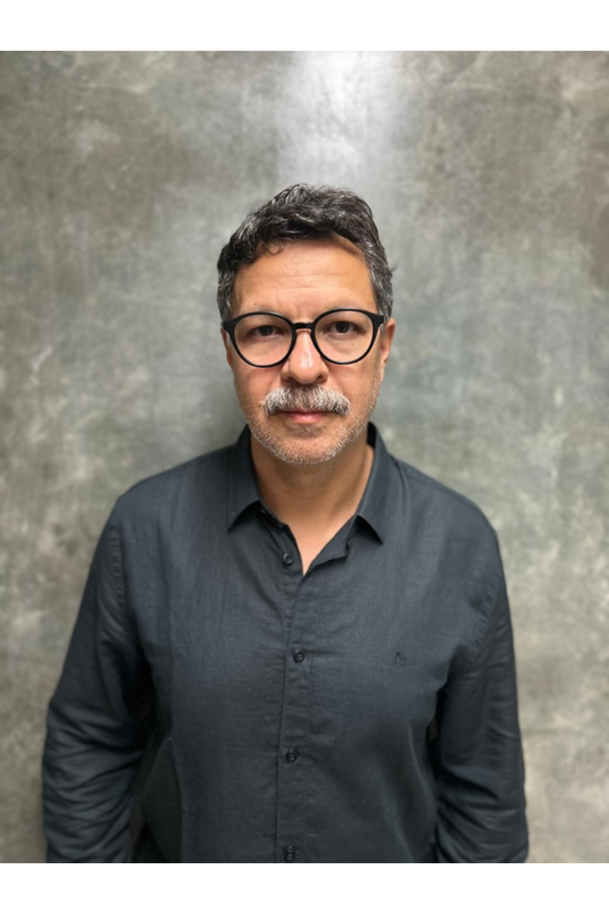
Professor do Programa de Pós-Graduação em Letras e do Curso de Graduação em Letras da PUC Minas. Possui doutorado em Estudos de Literatura pela UFF, com doutorado-sanduíche/Capes pela Stanford University (EUA) e pós-doutorado PNPD/Capes no Laboratório de Imagem e Som da Universidade Federal Fluminense. Atua como subcoordenador do GT Anpoll Intermidialidade: Literatura, Artes e Mídias, como membro-fundador da Red Latinoamericana de Investigaciones en Prácticas y Medios de la Imagen, e do Grupo de pesquisa Intermídia/CNPq. Músico e realizador audiovisual, é coorganizador dos livros Rituais da Percepção (2018), Estudos de intermidialidade: teorias, práticas, expansões (2022) e Assombros da história: memória, técnica, política (2022).
Alex Martoni is a professor in the Graduate Program in Languages and the Undergraduate Program in Languages at Pontificia Universidade Católica de Minas Gerais (PUC Minas). He holds a doctorate in Literary Studies from Universidade Federal Fluminense (UFF), which included a CAPES doctoral exchange period at Stanford University (USA), and completed a PNPD/CAPES postdoctoral fellowship at the Image and Sound Laboratory at Universidade Federal Fluminense. He currently serves as the deputy coordinator of the Anpoll working group on Intermediality: Literature, Arts, and Media, is a founding member of the Red Latinoamericana de Investigaciones en Prácticas y Medios de la Imagen and is a member of the Intermídia/CNPq research group. As a musician and audiovisual creator, he is the co-editor of the books Rituais da Percepção (2018), Estudos de intermidialidade: teorias, práticas, expansões (2022), and Assombros da história: memória, técnica, política (2022).
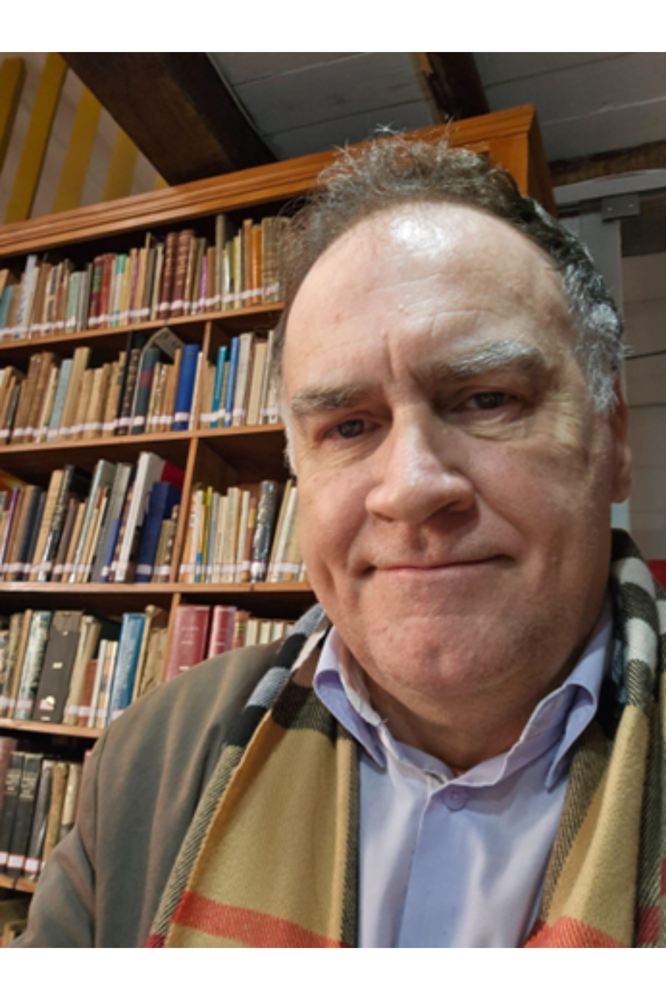
Edilson Rocha é Doutor e Mestre em Regência pela Escola de Música da UFBA. Possui graduação em Regência e Canto pela Escola de Música da UFMG. Foi professor substituto da Universidade Estadual Paulista Júlio de Mesquita Filho, UNESP, e pelo Conservatório Estadual de Música Padre José Maria Xavier. É atualmente Professor Titular na UFSJ, Coordenador do Programa de Pós-graduação em Música da UFSJ-PPGMUSI, lider do grupo de pesquisa Grupo de Musicologia da UFSJ. Fez parte da diretoria da ANPPOM, mandato 2022/2025, é membro do Comitê Gestor do CEDOC, Centro de Documentação da UFSJ. Foi Presidente da ABRAPEM, Associação Brasileira de Performance Musical, gestão 2016-2018, e foi membro da Comissão Assessora do ENADE. Tem experiência na área de Artes, com ênfase em Regência Coral e Orquestral, atuando principalmente com os seguintes temas: execução de repertório histórico mineiro, metodologia de pesquisa, regência coral-sinfônica, técnica vocal e musicologia. Foi professor de oficinas de regência oferecidas pela FUNREI (atual UFSJ), UNIMONTES e UNESP. Regeu vários grupos vocais e orquestrais universitários.
Edilson Rocha holds a master's and a doctorate in Conducting from the School of Music at the Federal University of Bahia (UFBA). He earned his undergraduate degree in Conducting and Voice from the School of Music at Universidade Federal de Minas Gerais (UFMG). He was a substitute professor at Universidade Estadual de São Paulo (UNESP) and at the Padre José Maria Xavier State Conservatory of Music. He is currently a titular professor at Universidade Federal de São João del-Rei (UFSJ), Coordinator of the university's Graduate Program in Music (PPGMUSI), and leader of the UFSJ Musicology Research Group. He served on the board of ANPPOM for the 2022-2025 term and is a member of the management committee of CEDOC, the UFSJ Documentation Centre. He was also President of ABRAPEM (Brazilian Association of Musical Performance) from 2016 to 2018 and served on the advisory committee for ENADE. He has experience in the field of Arts, with an emphasis on choral and orchestral conducting, focusing primarily on the following topics: performance of the historical repertoire from Minas Gerais, research methodology, choral-symphonic conducting, vocal technique, and musicology. He has taught conducting workshops offered by FUNREI (now UFSJ), UNIMONTES, and UNESP, and has conducted several university vocal and orchestral ensembles.
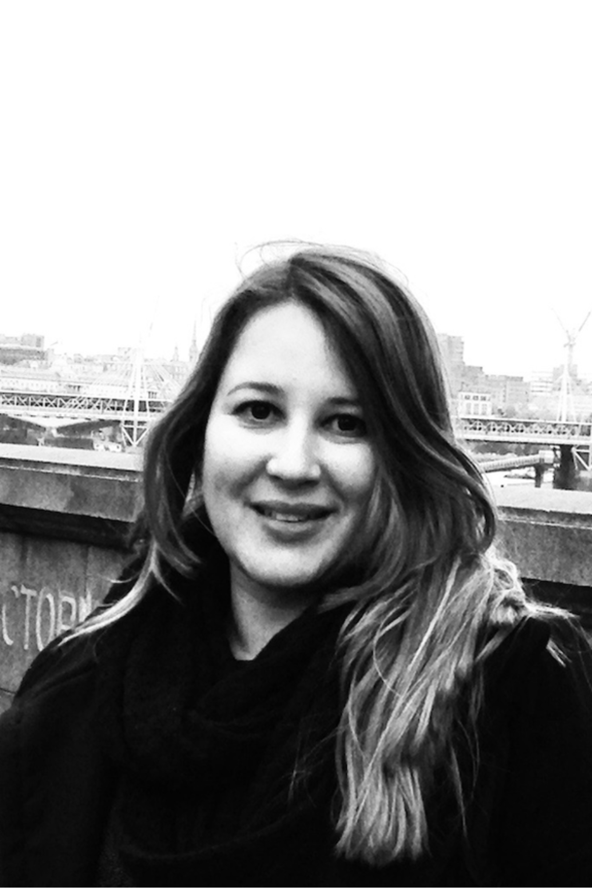
Realizadora, Artista e pesquisadora. Atualmente leciona no IFMG- Instituto Federal de Minas Gerais, é Mestre em Artes Visuais pela Universidade Federal de Minas Gerais e Doutora em Artes Visuais pela UERJ- Universidade do Estado do Rio de Janeiro. Entre o cinema e as artes visuais, desenvolve trabalhos com a criação de narrativas documentário-ficcionais e suas articulações entre memória e amnésia das cidades e dos territórios em disputa, as pesquisas se concentram nos processos entrópicos vinculados aos recursos minerais, a geologia e as mudanças climáticas decorrentes da economia e dos processos extrativistas. A investigação desenvolve-se a partir de experiências que partem do pessoal ao mais intensamente público e político, a partir de imagens, pistas e conteúdos que tocam as urgências do nosso tempo. Escreveu, dirigiu e produziu diversos filmes, exibidos e premiados em festivais e mostras nacionais e internacionais.
Simone Cortezão is a filmmaker, artist, and researcher. She currently teaches at the IFMG (Instituto Federal de Minas Gerais) and holds a master's degree in Visual Arts from the Universidade Federal de Minas Gerais, as well as a doctorate in Visual Arts from UERJ (Universidade Estadual do Rio de Janeiro). Working between cinema and visual arts, she develops projects centered on the creation of documentary-fiction narratives and their articulations between the memory and amnesia of cities and contested territories. Her research focuses on entropic processes linked to mineral resources, geology, and climate change resulting from the economy and extractivist practices. The investigation unfolds from personal experiences toward the more intensely public and political, drawing on images, traces, and materials that engage with the urgent issues of our time. She has written, directed, and produced several films that have been screened and awarded at national and international festivals and exhibitions.
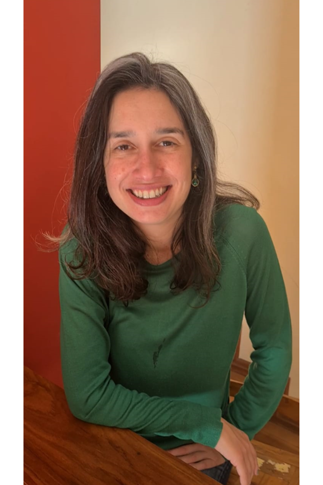
Maria Clara Ferrer é diretora teatral, dramaturga, tradutora e professora do Departamento de Artes da Cena da UFSJ, onde atua no Programa de Pós-Graduação em Artes da Cena desde 2017. É mestre e doutora em Estudos Teatrais pela Université Sorbonne Nouvelle e realizou dois pós-doutorados na Université Paris Nanterre, onde é pesquisadora associada ao laboratório HAR (Histoire des Arts de la Représentation). Atualmente, coordena o projeto Fotocênico de pesquisa-criação. Criou diversos espetáculos autorais apresentados em várias cidades do Brasil e no exterior. Sua pesquisa dialoga diretamente com sua prática artística. Ancorada nos estudos da percepção, ela aborda os conceitos de cena-paisagem e presença cênica, explorando também as influências da linguagem fotográfica nas cenas atuais.
Maria Clara Ferrer is a theatre director, playwright, translator, and professor in the Department of Performing Arts at Universidade Federal de São João del-Rei. She has been part of the Graduate Program in Performing Arts since 2017. She holds a master's and a doctoral degree in Theatre Studies from Université Sorbonne Nouvelle and completed two postdoctoral fellowships at the Université Paris Nanterre, where she is an associate researcher at HAR (Histoire des Arts de la Représentation). Currently, she coordinates the research-creation project Fotocênico. She is the creator of several original performances presented in various cities across Brazil and abroad. Her research directly dialogues with her artistic practice. Grounded in perception studies, she addresses the concepts of scene-landscape and stage presence, while also exploring the influences of photographic language on contemporary performance.
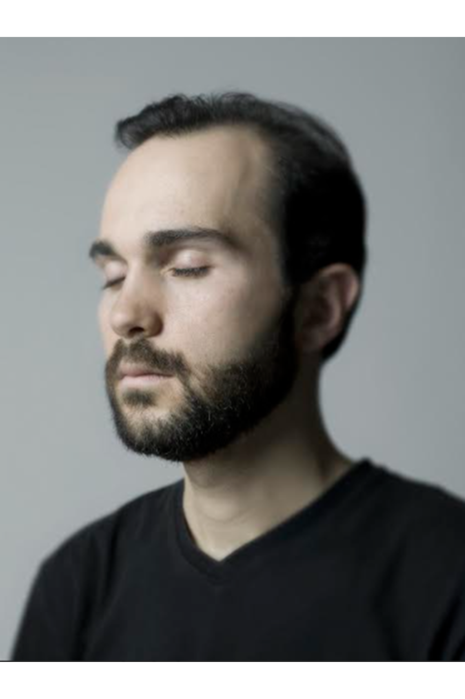
É artista visual, pesquisador e realizador cultural formado em artes plásticas pela Escola Guignard (UEMG) e Pittsate University (KS/EUA). Sua pesquisa poética se baseia na investigação sobre a construção de outros possíveis modelos de percepção e plataformas para produção de conhecimento. Foi artista residente do Atelier #3 na Casa Tomada (SP/2010), do JA.CA (BH/ 2014) e do RedBull Station (SP/2014); É co-idealizador e co-diretor do FIF BH (2013/2015/2017/2020). Foi contemplado no programa de exposições do Espaço Cultural Marcantônio Vilaça em 2015, no XIII e XIV Prêmio Marc Ferrez de Fotografia. Como idealizador e coordenador do projeto Retratistas do Morro participou do Rumos Itaú Cultural 2017/18, da Bolsa Funarte de Estímulo à Conservação Fotográfica Solange Zúñiga 2019, recebeu o prêmio de preservação do Patrimônio Cultural Brasileiro, do IPHAN, o 30o Prêmio Rodrigo Melo Franco de Andrade, o Prêmio Pipa Online e o Prêmio SP-Arte de melhor exposição do ano em 2023.
Guilherme Cunha is a visual artist, researcher, and cultural producer with a degree in Fine Arts from the Guignard School of Universidade Estadual de Minas Gerais (UEMG) and Pitt State University (KS/USA). His poetic research is grounded in the investigation of constructing alternative models of perception and platforms for knowledge production. He was an artist-in-residence at Atelier #3 at Casa Tomada (SP/2010), JA.CA (BH/2014), and Red Bull Station (SP/2014). He is the co-creator and co-director of FIF BH (2013/2015/2017/2020). He was selected for the exhibition program at the Marcantônio Vilaça Cultural Space in 2015 and received the XIII and XIV Marc Ferrez Photography Awards. As the creator and coordinator of the Retratistas do Morro project, he participated in the Rumos Itaú Cultural 2017/18 program and received the Funarte Solange Zúñiga Grant for Photographic Conservation in 2019. He was also awarded IPHAN's Brazilian Cultural Heritage Preservation Prize, the 30th Rodrigo Melo Franco de Andrade Prize, the Pipa Online Prize, and the SP-Arte Award for Best Exhibition of the Year in 2023.
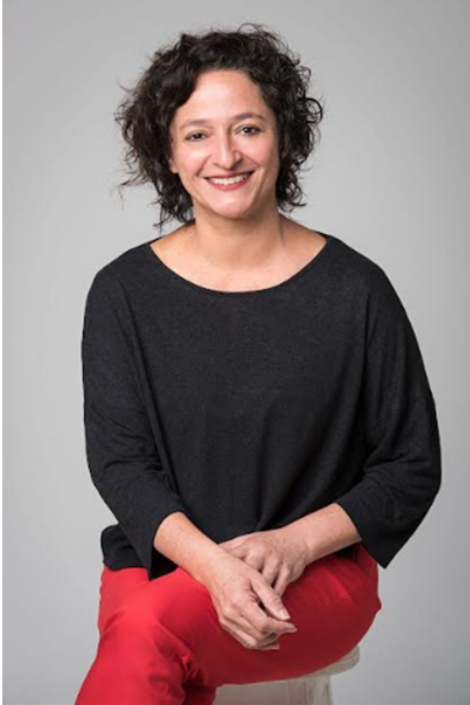
NYDIA NEGROMONTE [Lima, Peru] é artista plástica, formada em desenho pela Escola de Belas Artes da UFMG em 1989, com especialização em gravura em 1998: “La obra gráfica hoy: de la impronta grabada a la impronta digital”- Facultad de Bellas Artes, Universidad de Barcelona, Espanha. Entre 1999 e 2000 foi artista residente no Atelier HANGAR em Barcelona. Tem realizado importantes exposições individuais e coletivas em museus e galerias do país. Em 2012 realizou exposição individual, “Lição de Coisas” no Museu de Arte da Pampulha, Belo Horizonte, com curadoria de Renata Marquez e participou da 30ª Bienal de São Paulo, “A Iminência das Poéticas”, com curadoria de Luiz Pérez-Oramas.
Nydia Negromonte [Lima, Peru] is a visual artist who graduated in Drawing from the School of Fine Arts at Universidade Federal de Minas Gerais (UFMG) in 1989. She specialized in printmaking in 1998: "La obra gráfica hoy: de la impronta grabada a la impronta digital" at the Facultad de Bellas Artes, Universidad de Barcelona, Spain. Between 1999 and 2000, she was an artist-in-residence at the HANGAR Atelier in Barcelona. She has held important solo and group exhibitions in museums and galleries across the country. In 2012, she presented a solo exhibition, "Lição de Coisas," at the Pampulha Art Museum in Belo Horizonte, curated by Renata Marquez, and participated in the 30th São Paulo Biennial, "A Iminência das Poéticas," curated by Luiz Pérez-Oramas.
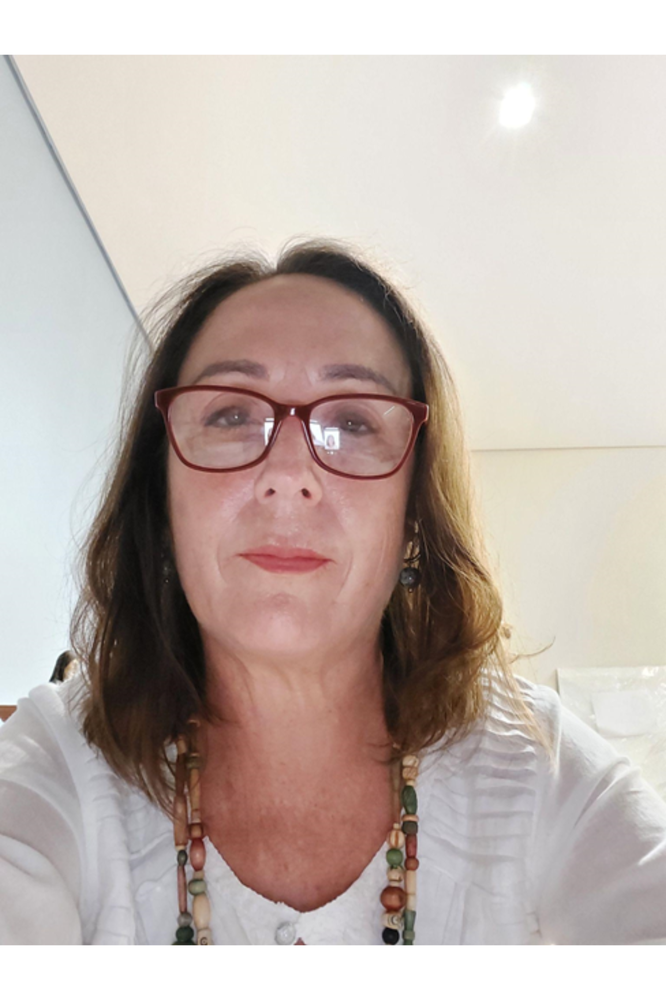
Maria Angela de Araújo Resende é Doutora em Literatura Comparada e Mestre em Teoria Literária (UFMG). Professora de Teoria Literária e Literatura Brasileira. Membro do GT de Literatura Comparada. Nos dois estágios de pós-doutoramento dedicou-se e até o presente, tem se dedicado às poéticas urbanas, com artigos e capítulos de livros sobre o tema.
Maria Angela de Araújo Resende holds a doctorate in Comparative Literature and a master's degree in Literary Theory from Universidade Federal de Minas Gerais (UFMG). She is a professor of Literary Theory and Brazilian Literature, and a member of the Comparative Literature working group. During both of her postdoctoral fellowships, and continuing to the present day, she has dedicated her research to urban poetics, publishing articles and book chapters on the subject.
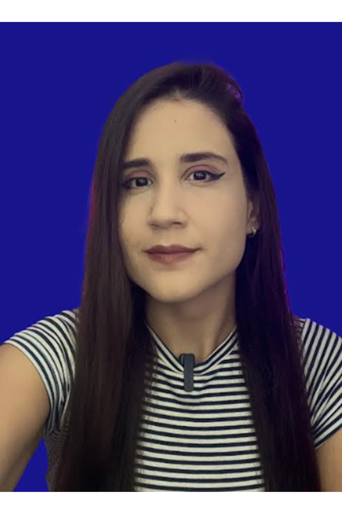
Clara Matheus Nogueira é professora de Literaturas de Língua Inglesa na Universidade Federal de Campina Grande (UFCG). É doutora e mestre em Estudos Literários pela Universidade Federal de Minas Gerais (UFMG), tem pesquisado no campo de estudos da intermidialidade e integra o grupo de pesquisa "Intermídia: Estudos sobre a Intermidialidade" (CNPq). Idealizou o projeto de divulgação acadêmica mimimidias, no qual atuou na elaboração de vídeos e podcasts sobre artes, entretenimento e cultura digital. Seu principal interesse de pesquisa são as mídias digitais, especialmente as adaptações de obras de Shakespeare para as mídias sociais.
Clara Matheus Nogueira is a professor of Literature in English at Universidade Federal de Campina Grande (UFCG). She holds a master's degree and a doctorate in Literary Studies from the Universidade Federal de Minas Gerais (UFMG). Her research is focused on intermediality studies, and she is a member of the research group "Intermídia: Estudos sobre a Intermidialidade" (CNPq). She conceived the academic outreach project mimimidias, where she participated in the creation of videos and podcasts about arts, entertainment, and digital culture. Her main research interest lies in digital media, especially adaptations of Shakespeare's works for social media platforms.
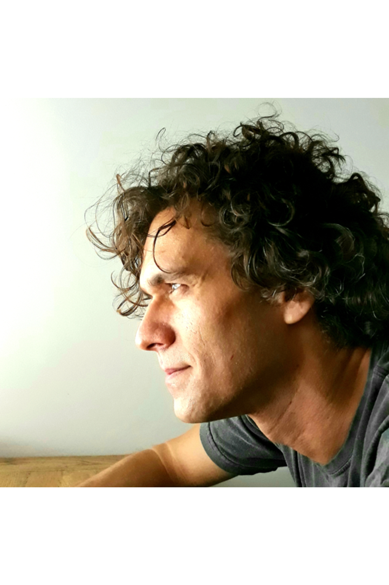
José Henrique Padovani é doutor e mestre em Música pela Unicamp. É professor, compositor e pesquisador na área de Música. Suas pesquisas e publicações voltam-se à criação musical, à computação musical e à sonologia em temáticas relacionadas à escuta/aprendizado de máquina, à interação audiovisual, à pesquisa-criação colaborativa e à ecologia sonora. É coordenador do Programa de Pós-Graduação em Música da Escola de Música da UFMG e pesquisador do Espaço de Criação e Investigação Sonora (ECrIS) da UFMG.
José Henrique Padovani holds a doctorate and a master's degree in Music from the Universidade Estadual de Campinas (Unicamp). He is a professor, composer, and researcher in the field of music. His research and publications focus on musical creation, music computing, and sonology, particularly in areas related to machine listening and learning, audiovisual interaction, collaborative research-creation, and sound ecology. He is the coordinator of the Graduate Program in Music at the School of Music of Universidade Federal de Minas Gerais (UFMG) and a researcher at the Espaço de Criação e Investigação Sonora (ECrIS) at UFMG.
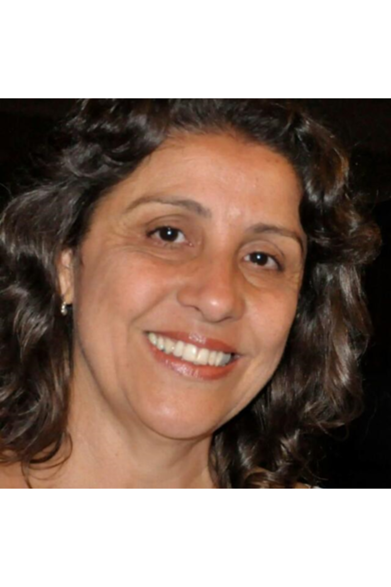
Alzira Agostini Haddad, gestora sociocultural mineira, reconhecida por sua atuação na preservação do patrimônio de São João del-Rei e região. Fundadora da Atitude Cultural e do banco de dados "São João del-Rei Transparente", coordena inúmeros projetos e ações que integram educação patrimonial e tecnologia. Autora do projeto e livro "Ser nobre é ter identidade", Alzira possui vasta formação acadêmica e internacional em revitalização urbana e gestão cultural. Com diversas premiações e participações em congressos, sua trajetória destaca-se pela divulgação e fortalecimento da identidade cultural. Nasceu em São João del-Rei, Minas Gerais, é cidadã ítalo-brasileira, é pesquisadora, escritora, criou e é gestora do Banco de Dados/Inventário sociocultural de São João del-Rei, Tiradentes e Ouro Preto Transparentes: Rede Colaborativa pró-Agenda 2030 (www.saojoaodelreitransparente.com.br), coordena a Atitude Cultural, que já realizou cerca de 800 ações entre projetos e pesquisa-ação/todas inventariadas e do Projeto Ser nobre é ter identidade, que desenvolve projetos de Educação Patrimonial.
Alzira Agostini Haddad is a sociocultural manager from Minas Gerais, recognized for her work in the preservation of the cultural heritage of São João del-Rei and the surrounding region. Founder of Atitude Cultural and the "São João del-Rei Transparente" database, she coordinates several projects and initiatives that integrate heritage education and technology. Author of the project and book "Ser nobre é ter identidade," Alzira possesses an extensive academic and international background in urban revitalization and cultural management. With several awards and participation in conferences, her career is marked by the promotion and strengthening of cultural identity. Born in São João del-Rei, Minas Gerais, she is an Italian-Brazilian citizen, researcher, and writer. She created and manages the sociocultural database/inventory "São João del-Rei, Tiradentes e Ouro Preto Transparentes: Collaborative Network for the 2030 Agenda" (www.saojoaodelreitransparente.com.br). She coordinates Atitude Cultural, which has carried out nearly 800 actions involving projects and action-research initiatives—all fully inventoried—and the project "Ser nobre é ter identidade," which develops heritage education projects.
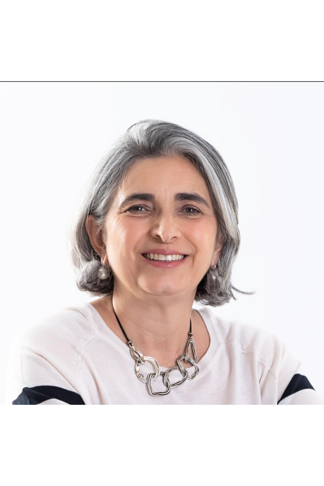
Miriam de Paiva Vieira é professora do Departamento de Letras, Artes e Cultura e do Programa de Pós-Graduação em Letras da UFSJ. Bolsista Produtividade CNPq/PQ2. Suas áreas de interesse são os estudos sobre a intermidialidade, écfrase, e relações entre literatura e arquitetura Coordenadora do GT da Anpoll Intermidialidade: Literaturas, artes e mídias, é membro do conselho da International Society for Intermedial Studies, membro do Grupo de Pesquisa Intermídia (CNPq) e credenciada nas associações IAWIS: International Association of Word and Image Studies e CRIalt: Centre de recherches intermédiales sur les arts, les lettres et les techniques. Entre suas publicações, destaca-se a coedição do The Palgrave Handbook of Intermediality.
Miriam de Paiva Vieira is a professor in the Department of Literature, Arts and Culture and the Postgraduate Programme in Literature at UFSJ. She holds a CNPq/PQ2 Productivity Fellowship. Her areas of interest include studies on intermediality, ekphrasis, and the relationship between literature and architecture. She is the coordinator of the Anpoll Working Group on Intermediality: Literature, Arts and Media, she is a member of the board of the International Society for Intermedial Studies, a member of the Intermedia Research Group (CNPq) and an accredited member of the associations IAWIS: International Association of Word and Image Studies and CRIalt: Centre de recherches intermédiales sur les arts, les lettres et les techniques. Among her publications, The Palgrave Handbook of Intermediality is relevant to be highlighted.
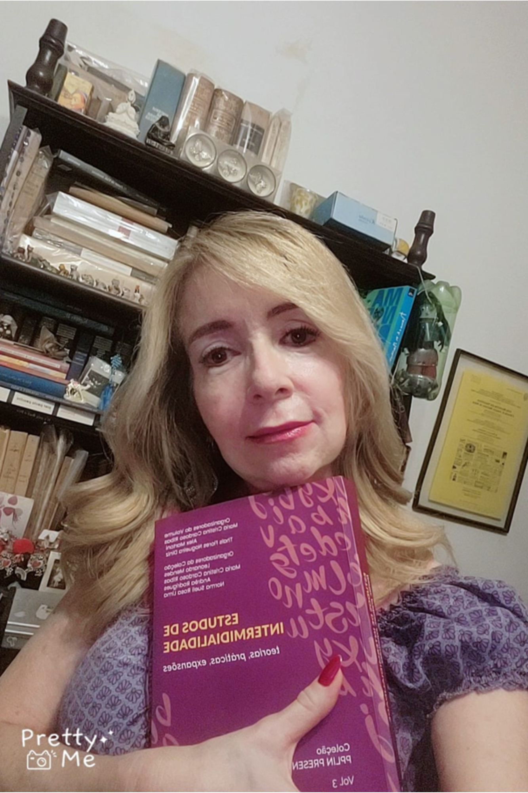
Doutora em Ciência da Literária, Teoria, pela UFRJ e Professora Associada em Letras, UERJ, em Teoria Literária, Literatura Comparada e Intermidialidade, área em que fez Pós-Doutoramento pela UFF. Membro do grupo Intermídia (UFMG) e do GT Anpoll Intermidialidade: Literatura, Artes e Mídias, foi líder do Grupo de Pesquisa na Fundação Biblioteca Nacional e pesquisadora na ABL. Cordenadora geral do Programa de Pós-graduação em Letras e Linguística - PPLIN/UERJ no biênio 2024-2026, coordena desde 2022 o Núcleo de Pesquisa e Extensão em Literatura, Leitura e Intermidialidade, NuPELLI. É membro efetivo do PPLIN, campus de São Gonçalo e do Programa de Pós-graduação em Letras, PGL, Campus Maracanã. É Procientista UERJ/FAPERJ, Bolsista de Produtividade C CNPq e Cientista do Nosso Estado/ FAPERJ. Publicou os livros Onze anos de correspondência: os machados de Assis; Leituras na contemporaneidade: Olhares em Trânsito; Interconexões: Mídias, saberes e linguagens; Estudos de Intermidialidade: teorias, práticas, expansões, com Thaïs Flores Nogueira Diniz e Alex Martoni; Leituras Intermidiáticas e Intermidialidades Narrativas, com Thaïs Diniz e Cristine Fickelscherer Mattos. Com trabalho coreográfico de transposição midiática de romances, a professora é também bailarina.
Maria Cristina Ribas holds a doctorate in Literary Theory from UFRJ (Universidade Federal do Rio de Janeiro) and is an associate professor of Letters at UERJ (Universidade Estadual do Rio de Janeiro), where she teaches Literary Theory, Comparative Literature, and Intermediality, the field in which she completed her postdoctoral fellowship at UFF (Universidade Federal Fluminense). She is a member of the Intermídia research group (UFMG) and the Anpoll working group on Intermediality: Literature, Arts, and Media. She previously led a research group at the National Library Foundation and was a researcher at the ABL (Brazilian Academy of Letters). She serves as the general coordinator of the Graduate Program in Letters and Linguistics (PPLIN/UERJ) for the 2024-2026 term, and since 2022, she has coordinated the Research and Extension Center for Literature, Reading, and Intermediality (NuPELLI). She is a permanent member of the PPLIN program at the São Gonçalo campus and the Graduate Program in Letters (PGL) at the Maracanã campus. She is a Procientista scholar at UERJ/FAPERJ, a CNPq Productivity Fellow C, and a recipient of the Cientista do Nosso Estado grant from FAPERJ. Among her publications are the books Onze anos de correspondência: os machados de Assis; Leituras na contemporaneidade: Olhares em Trânsito; Interconexões: Mídias, saberes e linguagens; Estudos de Intermidialidade: teorias, práticas, expansões, co-authored with Thaïs Flores Nogueira Diniz and Alex Martoni; and Leituras Intermidiáticas e Intermidialidades Narrativas, with Thaïs Diniz and Cristine Fickelscherer Mattos. With choreographic work involving the media transposition of novels, the professor is also a ballet dancer.
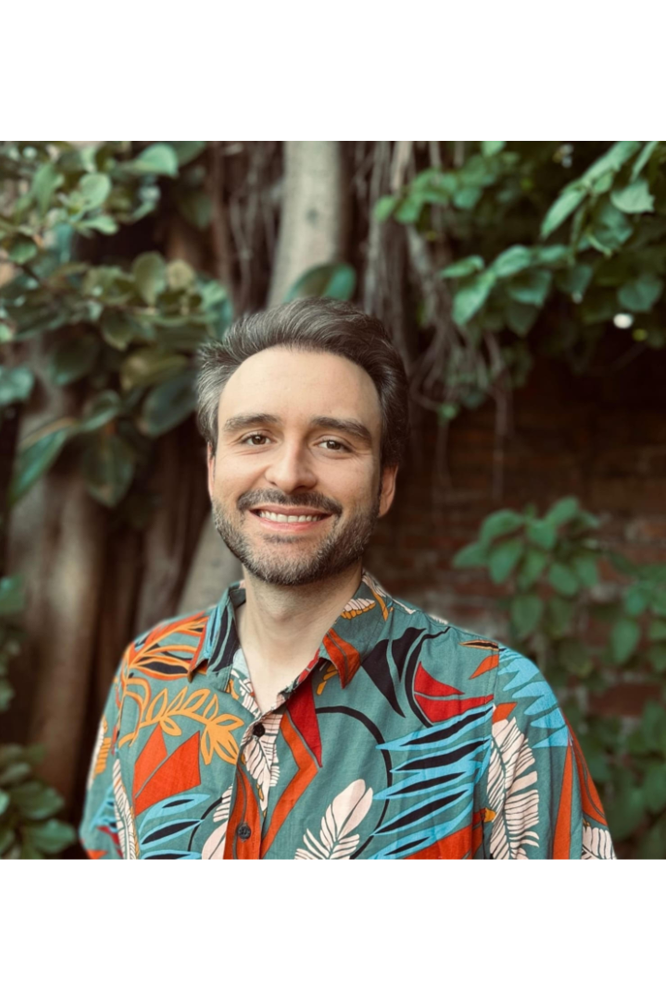
Lucas Zamberlan é professor do Departamento de Letras Vernáculas e do Programa de Pós-Graduação em Letras da Universidade Federal de Santa Maria (UFSM). Em sua trajetória de pesquisa, tem se dedicado ao estudo das relações entre literatura, outras artes e mídias e entre literatura e história. Coordena o projeto de pesquisa Literatura Brasileira e Intermidialidade (LIBRIN), o projeto de extensão Literaturas Contemporâneas e Saberes Populares e integra o Grupo Intermídia, da UFMG e o Laboratório de estudos de literatura e cultura da Belle Époque, da UERJ. Participa também de iniciativas editoriais voltadas à preservação e à difusão do patrimônio literário. É autor da biografia Felippe D’Oliveira: o poeta da lanterna verde, de Teoria da Literatura e de Artes e Letras: crônica dos começos, livro que homenageia os 60 anos do Centro de Artes e Letras da UFSM.
Lucas Zamberlan is a professor in the Department of Vernacular Letters and the Graduate Program in Letters at Universidade Federal de Santa Maria (UFSM). Throughout his academic career, he has dedicated his research to studying the relationships between literature, other arts, and media, as well as between literature and history. He coordinates the research project Literatura Brasileira e Intermidialidade (LIBRIN) and the extension project Literaturas Contemporâneas e Saberes Populares. He is a member of the Grupo Intermídia from Universidade Federal de Minas Gerais (UFMG) and the Laboratory for Studies in Literature and Culture of the Belle Époque at the Universidade Estadual do Rio de Janeiro (UERJ). He is also involved in editorial initiatives dedicated to the preservation and dissemination of literary heritage. He is the author of the biography Felippe D'Oliveira: o poeta da lanterna verde, Teoria da Literatura, and Artes e Letras: crônica dos começos, a book that pays homage to the 60th anniversary of the Center for Arts and Letters at UFSM.
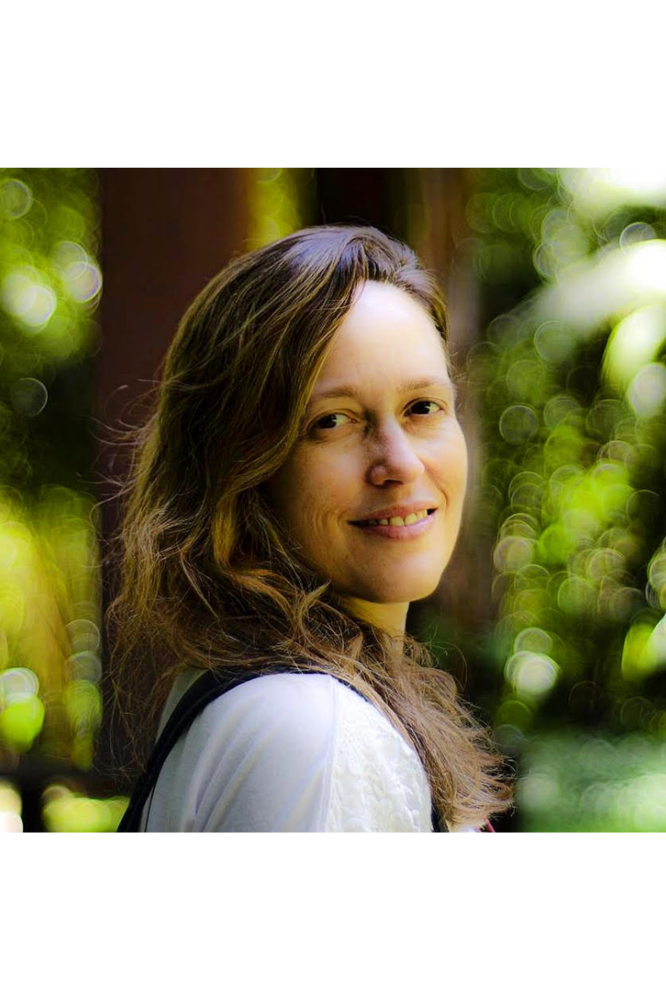
Camila Augusta Pires de Figueiredo é doutora em Literatura Comparada pela Universidade Federal de Minas Gerais (UFMG), com período de mobilidade na Universidade Técnica de Braunschweig, na Alemanha. Possui mestrado em Literaturas de Língua Inglesa, na linha de pesquisa Literatura, Outras Artes e Mídias, pela UFMG. É editora de publicações na Editora UFMG, onde atua como vice-diretora. Sua pesquisa se dedica à narrativa transmídia e à adaptação, com ênfase especial nas relações entre literatura, cinema e romances gráficos. É coorganizadora de diversas coletâneas, entre elas Entre textos, entre artes, entre mídias: ensaios de Claus Clüver (Paco Editorial, 2024) e Intermidialidade: cinema e adaptação palavra e imagem transmidia(lidade) (Editora Unimontes, 2024).
Camila Augusta Pires de Figueiredo holds a doctorate in Comparative Literature from Universidade Federal de Minas Gerais (UFMG), which included a mobility period at the Braunschweig University of Technology in Germany. She holds a master's degree in Literatures in English, within the research line of Literature, Other Arts, and Media, from UFMG. She is a publishing editor at Editora UFMG, where she works as vice-director. Her research is dedicated to transmedia narratives and adaptation, with a special emphasis on the relationships between literature, cinema, and graphic novels. She is the co-editor of several collections, including Entre textos, entre artes, entre mídias: ensaios de Claus Clüver (Paco Editorial, 2024) and Intermidialidade: cinema e adaptação palavra e imagem transmidia(lidade) (Editora Unimontes, 2024).
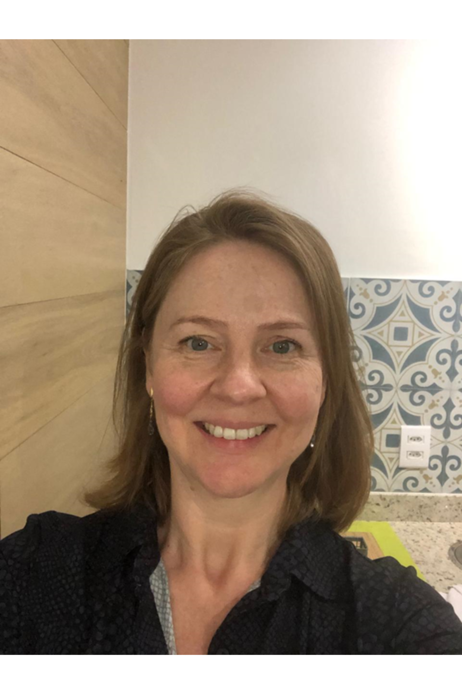
Elaine Barros Indrusiak é professora do Departamento de Línguas Modernas e do Programa de Pós-Graduação em Letras da Universidade Federal do Rio Grande do Sul. Possui graduação em Letras - Língua Inglesa, e mestrado e doutorado em Literatura Comparada pela mesma Universidade. É pesquisadora dos grupos de pesquisa Intermídia (UFMG/CNPq) e Leitura Comparada das Mídias (UNISC/CNPq) e do GT de Intermidialidade da Anpoll. Realizou Pós-Doutorado junto ao Departamento de Cinema e Mídias Interativas da University of Miami (2015-2016). Coordena o Grupo de Estudos de Narrotologia e Intermidialidade (GENI / UFRGS) e o projeto de pesquisa “Narrativa e(m) mídias: por uma narratologia transmídia”, que visa explorar a aplicabilidade de diferentes correntes narratológicas de bases literárias ao estudo de narrativas em mídias diversas.
Elaine Barros Indrusiak is a professor in the Department of Modern Languages and the Graduate Program in Letters at Universidade Federal do Rio Grande do Sul. She holds an undergraduate degree in English Language and Literature, as well as a master's and a doctorate in Comparative Literature from the same university. She is a researcher in the research groups Intermídia (UFMG/CNPq) and Comparative Media Reading (UNISC/CNPq), as well as the Anpoll working group on Intermediality. She completed a postdoctoral fellowship at the Department of Cinema and Interactive Media at the University of Miami (2015-2016). She coordinates the Study Group on Narratology and Intermediality (GENI / UFRGS) and the research project "Narrativa e(m) mídias: por uma narratologia transmídia," which aims to explore the applicability of different literary-based narratological approaches to the study of narratives across various media.
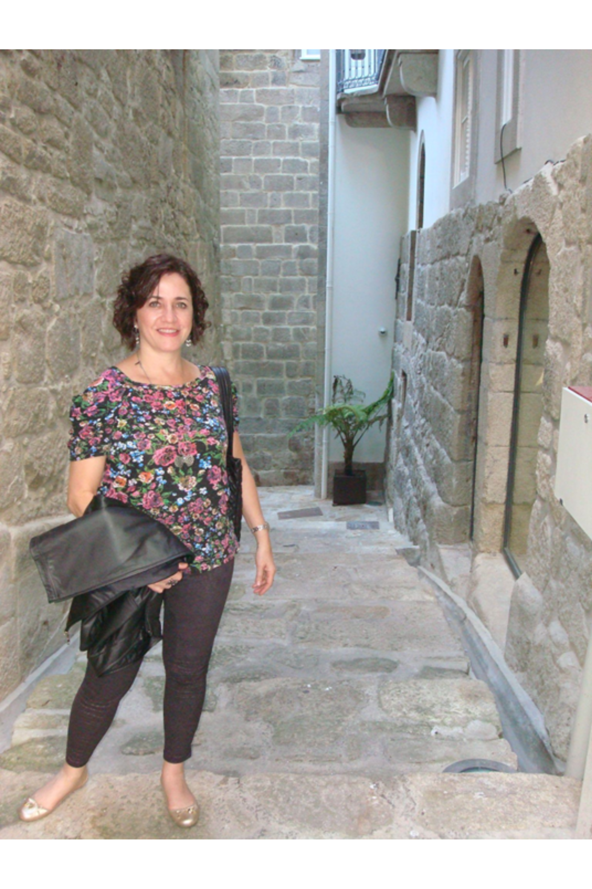
Cecília Nazaré de Lima é doutora pela Escola de Belas Artes da UFMG (Cinema), mestre em Fundamentos teórico das artes (Música), pelo Instituto de Artes da UNICAMP, e graduada em Composição e em Piano. Professora Associada da Escola de Música da UFMG, atualmente, desenvolve pesquisas vinculadas a análise, reedição de partituras e estudos sobre a relação da música com outras artes, em especial a literatura e o cinema. Na composição, partituras de alguns de seus trabalhos estão disponíveis para livre acesso no site do Sesc Partituras.
Cecília Nazaré de Lima holds a doctorate in Cinema from the School of Fine Arts at Universidade Federal de Minas Gerais (UFMG), a master's degree in Theoretical Foundations of the Arts (Music) from the Institute of Arts at Universidade Estadual Campinas (UNICAMP), and an undergraduate degree in both Composition and Piano. She is an Associate Professor at the School of Music at UFMG and currently conducts research related to the analysis and reediting of scores, as well as studies on the relationship between music and other arts, especially literature and cinema. As a composer, the scores for some of her works are freely available on the Sesc Partituras website.